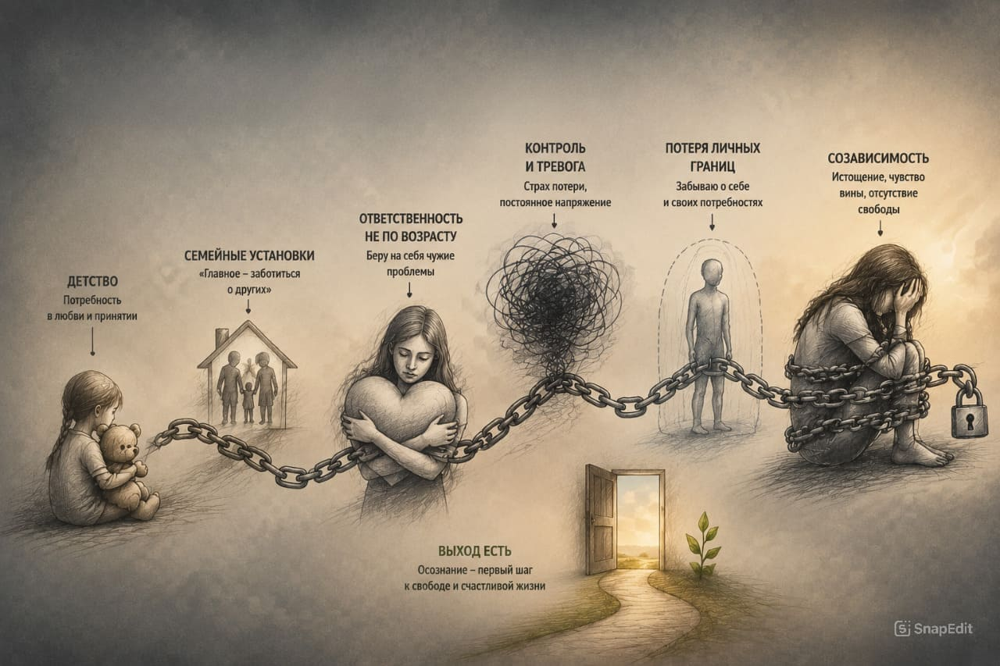
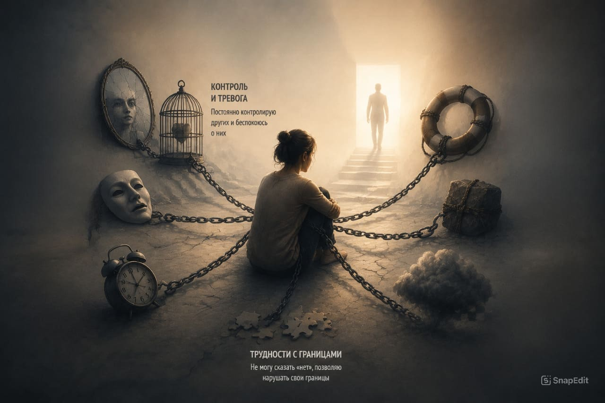
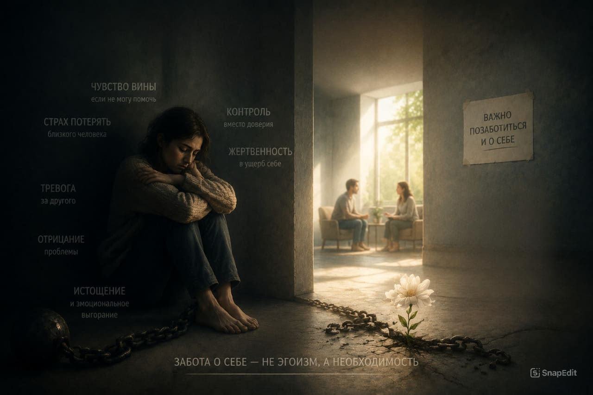

+375 29 784 18 20
|
+375 29 557 86 41
Созависимость — это состояние, при котором жизнь близкого человека начинает полностью сосредотачиваться вокруг проблемы зависимости другого человека.
Часто родственники стараются помочь, контролировать ситуацию и поддерживать близкого, но постепенно сами оказываются в состоянии постоянного напряжения и тревоги.

Когда рядом находится человек с зависимостью, близкие часто постепенно начинают жить его проблемой. Они стараются контролировать ситуацию, предотвращать последствия и брать на себя ответственность за чужие решения.
Так формируется модель поведения, при которой собственные чувства, потребности и жизнь человека отходят на второй план.
Созависимость часто возникает не из равнодушия, а из желания помочь и сохранить отношения, но со временем может становиться источником сильного эмоционального напряжения.
Созависимость может проявляться через постоянную тревогу за близкого человека, стремление контролировать его жизнь и попытки взять ответственность за чужие решения.
Человек может постепенно привыкать жить проблемами другого, забывая о собственных чувствах, потребностях и личных границах.
Понимание этих признаков помогает увидеть проблему и обратить внимание не только на зависимость близкого человека, но и на состояние всей семьи.

Созависимость влияет не только на самого человека, но и на отношения внутри семьи. Постоянное напряжение, тревога и попытки контролировать ситуацию могут постепенно истощать близких.
Осознание проблемы помогает лучше понять происходящее и увидеть, что поддержка нужна не только человеку с зависимостью, но и его окружению.

Близкие люди часто оказываются втянутыми в постоянную борьбу с последствиями зависимости и постепенно перестают замечать собственное эмоциональное состояние.
Понимание механизмов созависимости помогает увидеть ситуацию более ясно и осознать, что изменения начинаются с признания проблемы.
Забота о себе и понимание происходящего позволяют сохранить отношения и создать более здоровую основу для дальнейшего восстановления семьи.
Созависимость часто формируется постепенно, поэтому её сложно заметить сразу. Важно понимать, что изменения начинаются с осознания происходящего.
Понимание своих чувств, границ и роли в отношениях помогает человеку по-другому взглянуть на ситуацию и найти более здоровый путь взаимодействия с близким.
В центре «Анастасис» внимание уделяется не только человеку, проходящему восстановление, но и пониманию процессов, которые происходят в семье.